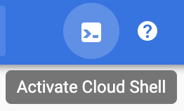
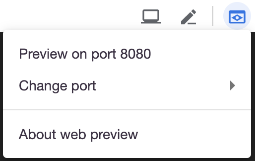

In this course, you are being strongly encouraged to use the Google Cloud Platform Cloud Shell virtual machine as your development environment for your projects this semester. Installing Visual Studio Code directly on that virtual machine means that you will be able to use one of the best IDEs around on any machine you are using with zero installation and setup (after following these instructions.) |
|

What Technologies Are We Using?
- Visual Studio Code is an open-source IDE by Microsoft that offers a large number of add-ons and functions that are invaluable for developers
- Your development environment will be the Google Cloud Shell, which is a Linux (Ubuntu) VM that has most (not all) of the software you'll use this semester pre-installed
Installing Visual Studio Code is relatively easy, and you should only have to do it once.
- Log into Your Google Cloud Shell
- Install Visual Studio Code from source
- Create a Bash script that lets you launch VS Code from the command line
- Create a Bash script that lets you quit VS Code from the command line
- Introduction to some helpful Linux commands when running processes in the background
You can load the Google Cloud Shell two ways:
Option 1:
Log into the Google Cloud Platform (https://console.cloud.google.com) and choose the "Activate Cloud Shell" icon at the top right. |  |
Option 2:
Go directly to the Cloud Shell (https://ssh.cloud.google.com)
Go Home
At the root level (your "home" directory) of your Cloud Shell, create a new directory and enter it.
Copy and paste the following code into your command line:
mkdir vscode && cd vscodeStore the Current Version Number of Code Server
We are using a tool called code-server to run VS Code on our virtual machine. We need to find the most recently released version number, which we'll store in a variable called VERSION.
Copy and paste the following code into your command line (it's a long command, so copy all the way to the right):
export VERSION=2.1698-vsc1.41.1Download Code Server
You can now download the most up-to-date version of code-server.
Copy and paste the following code into your command line (it's a long command, so copy all the way to the right)::
wget https://github.com/cdr/code-server/releases/download/$VERSION/code-server$VERSION-linux-x86_64.tar.gzExtract the archive:
tar -xvzf code-server$VERSION-linux-x86_64.tar.gzEnter the newly-created directory and start the application:
cd code-server$VERSION-linux-x86_64
./code-server --auth none --port 8080Run Visual Studio Code
VS Code is now running as a web process on port 8080 of your virtual machine. To see the software in the browser, choose the "Web Preview" icon at the top of the Cloud Shell terminal window and choose Preview on port 8080. |  |
Quitting VS Code
To quit VS Code (so that you can use your command line again), click once in the Cloud Shell terminal and press Ctrl+C
(We'll make this work more smoothly in the next two steps.)
In this step and the next, you will create two Bash scripts that will start and stop Visual Studio Code.
Bash scripts contain a series of instructions on the command line. You can write Bash scripts to help you run multiple tasks that you have to execute in sequence.
Go Home
Make sure you are in your home directory by typing cd ~
Create a New File
You'll create a new file where we will store our script's instructions. This will be a hidden file at the root of your virtual machine.
nano .startvscodeThis will open the nano terminal text editor. Don't panic. You'll only use it a tiny bit.
Copy and paste the instructions into the text file. Be sure you change line 4 to your username! Example:
USERNAME=elliott
.startvscode
#!/bin/bash
# This script will launch Visual Studio Code as a background process on the Google Cloud Shell
USERNAME=username # UPDATE WITH YOUR USERNAME
VSCODEDIR=/home/$USERNAME/vscode/code-server2.1692-vsc1.39.2-linux-x86_64
cd $VSCODEDIR
./code-server --auth none --port 8080 &
echo "***NOTE: Press Ctrl+C to continue working in the Terminal while VS Code runs."Save the file by typing Ctrl+X and then Y.
Launching VS Code
You can now launch VS Code by typing the following instruction while in your home directory:
bash .startvscodeUse the Web Preview for port 8080 to see Visual Studio Code run in a browser tab.
Now you'll create a script that you can use to stop VS Code.
Go Home
Make sure you are in your home directory by typing cd ~
Create a New File
You'll create a new file where we will store our script's instructions. This will be a hidden file at the root of your virtual machine.
nano .stopvscodeThis will open the nano terminal text editor again. Still: don't panic
Copy and paste the instructions into the text file.
.stopvscode
#!/bin/bash
# This script will terminate all running Visual Studio Code processes
killall code-server
echo "***NOTE: Use the 'ps' command to see if processes have stopped."Save the file by typing Ctrl+X and then Y.
Stopping VS Code
You can now stop a running instance of VS Code by typing the following instruction while in your home directory:
bash .stopvscodeWhen you run your .startvscode script, you are launching VS Code as a process. Your virtual machine can run multiple processes at once.
If you want to see which processes are running, you can use the ps command.
If VS Code is running, you will see one or more code-server processes. (More processes are consumed when VS Code is doing more things.)
If you accidentally close the browser tab where VS Code is running, you'll need to stop it and start it again:
bash .startvscode
bash .stopvscode